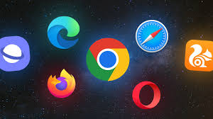

Conceitos Básicos
Nesta seção, você aprenderá sobre:
O que é um navegador?
Um navegador é um programa que permite acessar a internet e visualizar páginas da web. Exemplos de navegadores populares são o Google Chrome, Mozilla Firefox e Microsoft Edge.

O que é a nuvem?
A nuvem é um serviço de armazenamento online onde você pode guardar arquivos, fotos, vídeos e outros dados. Exemplos de serviços de nuvem são o Google Drive, Dropbox e OneDrive.

O que são redes sociais?
Redes sociais são plataformas online onde as pessoas podem se conectar, compartilhar informações e interagir. Exemplos de redes sociais são o Facebook, Instagram e Twitter.